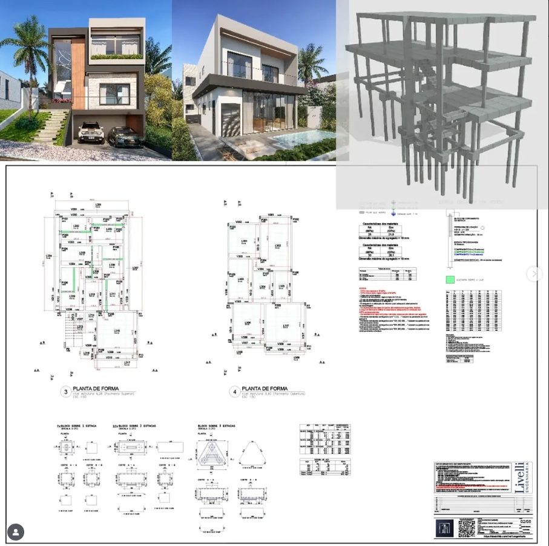
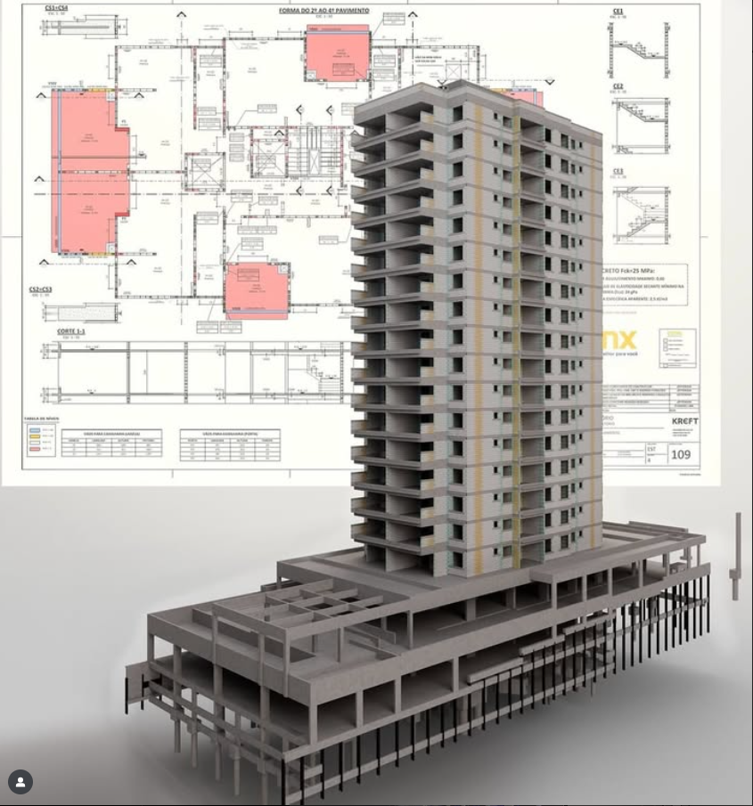
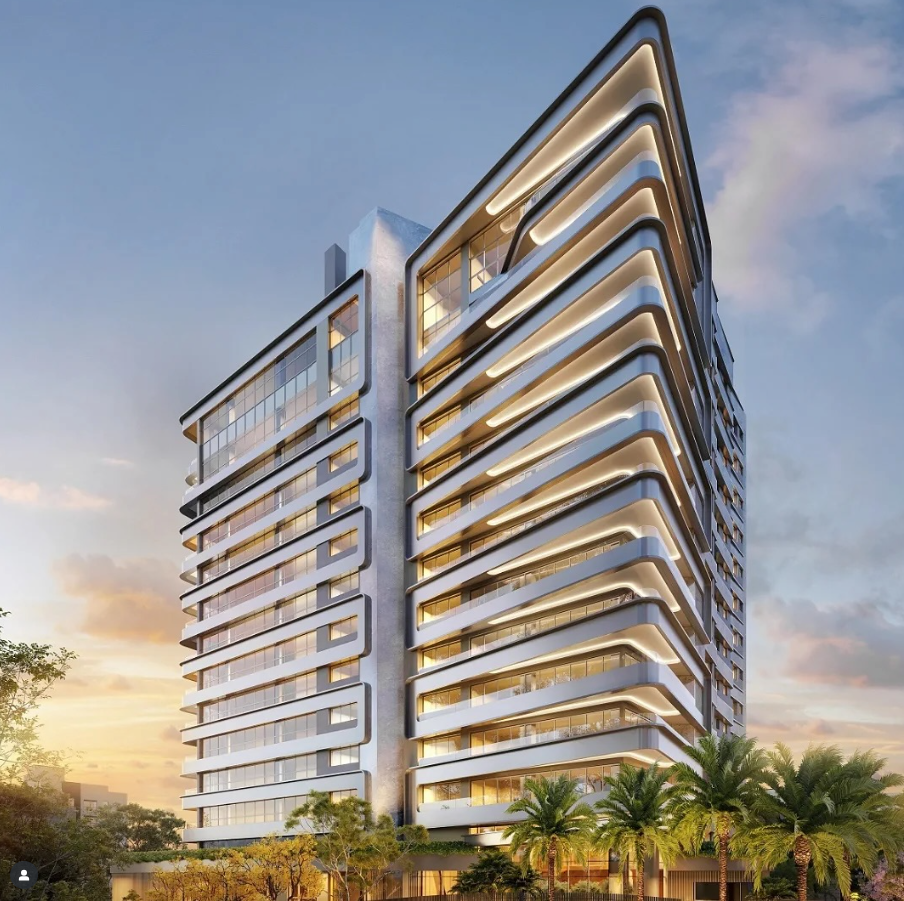

1 • Slider horizontal


AntesDepois
↔
2 • Hover (fade)

AntesPasse o mouse
3 • Clique para alternar


AntesDepois
4 • Divisor arrastável

AntesDepois
5 • Slider vertical
↕
AntesDepois
6 • Máscara circular (mouse)
AntesRevele com o mouse
7 • Wipe diagonal
AntesDepois
8 • Flip 3D
AntesDepois
9 • Crossfade (auto)
AntesDepois
10 • Thumbs + slider
↔
AntesDepois
AntesDepois